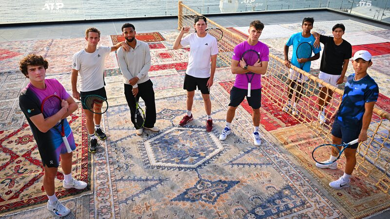

Rising Star Set to Debut in Finals

Tennis enthusiasts around the world are abuzz as the Next Gen ATP Finals in Jeddah are set to commence. China’s 19-year-old tennis prodigy, Shang Juncheng, is preparing to face France’s Luca Van Assche in tonight’s highly anticipated opening match. The atmosphere in Jeddah is electric. The eight finalists have arrived in Saudi Arabia, embracing the opportunity to unwind before the competition heats up. Shang and his fellow competitors enjoyed a relaxing day aboard a yacht, where they participated in a friendly swimming race in the pristine waters of the Red Sea. For Shang Juncheng, this tournament represents a pivotal moment in his burgeoning career. “Being at the Next Gen ATP Finals means everything to me,” he shared with palpable excitement. “Some of the best players have competed in this event when they were young, and it’s something truly special. If you look at past champions, Jannik Sinner, Carlos Alcaraz—they’ve all played here. Not many players get to compete in this event. I’ve heard it’s amazing, and I just can’t wait to get there.” Shang’s enthusiasm reflects the significance of the Next Gen ATP Finals as a launching pad for the tennis stars of tomorrow. His upcoming match against Van Assche promises to be a showcase of youthful talent and determination. As the tournament unfolds, fans and analysts alike will be watching closely to see how Shang’s performance might signal the rise of a new era in Chinese tennis. With the global spotlight on Jeddah, this event offers a stage for young athletes like Shang to make their mark on the international scene. Tonight’s match is not just a game; it’s a chapter in the evolving story of tennis, where emerging talents are poised to shape the future of the sport. Shang Juncheng stands on the precipice of greatness, ready to embrace the challenge and seize the opportunity to inspire a new generation of tennis enthusiasts.